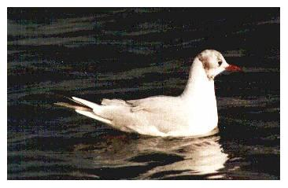

Black-headed Gull
A common year round visitor to the reservoir, normally gathering in sizeable flocks, especially in winter months.

05/11/70 - 336 birds
??/08/83 - 380 birds
??/12/83 - 800 birds
??/03/84 - 800+ birds
05/01/91 - 300 birds
??/10/91 - Between 280 & 600 birds during the October to December period
27/11/92 - 1000+ birds
19/01/93 - Approx. 570 birds
28/11/93 - 1000+ birds
17/12/94 - Approx. 1500 birds roosted during the strong, southerly winds
09/01/95 - Approx. 500 birds
06/12/97 - Single leucistic bird sighted. This same bird has been seen at Axmouth, Devon for the past 5 years, indicating that the reservoir gulls commute between the 2 locations
02/01/98 - 600 birds
??/11/98 - 1000 birds
??/12/98 - 500 birds
??/01/99 - Approx. 400 birds
??/02/99 - Approx. 550 birds
??/03/99 - Approx. 340 birds
??/10/99 - Approx. 450 birds
??/11/99 - Approx. 500 birds
14/01/00 - 300 birds
28/07/00 - 167 birds
02/12/00 - Approx 1000 birds
19/02/01 - 300 birds
01/12/01 - 350 birds
21/12/01 - 1100 birds
15/01/02 - 700 birds
28/02/02 - 1000+ birds
07/03/02 - 420 birds
23/10/02 - Approx 500 birds
05/11/02 - 300 birds
08/12/02 - 387 birds
13/12/02 - One albino
15/12/02 - 560 birds
03/01/03 - 500+ birds
25/10/03 - 450 birds
02/11/03 - 500 birds
14/11/03 - 1500 birds
05/12/03 - 530 birds still present the following day
13/12/03 - 625 birds
10/02/04 - Approx 1000 birds
14/02/04 - Approx 500 birds
09/03/04 - Approx 600 birds
07/01/05 - 300 birds
30/01/05 - 362 birds
07/02/05 - 730 birds
15/02/05 - Approx 800 birds
22/12/05 - 570 birds
24/02/06 - 227 birds, a low maximum for February
12/11/06 - 700 birds
06/12/06 - 570 birds
27/12/06 - 1100 birds
08/01/07 - 350 birds
22/01/07 - 1 oiled bird coincides with an oil spillage at Seaton
16/10/07 - 400 birds
12/12/08 - 197 birds and 500 birds on 19/12
16/01/09 - 1000 birds
03/12/09 - 293 birds
25/12/11 - 360 birds
14/01/12 - 500+
07/11/12 - c.400
24/02/13 - c.800
22/11/13 - 411
14/12/13 - 400+
2014 - Up to 250+ seen during October/November/December
2015 - 200 or more were regularly seen during the winter months of Jan/Feb/Mar and Oct/Nov/Dec with peaks of 500+ on 04/03, 400+ on 12/03 and 350+ on 11/01. Also a colour ringed bird was seen on 12/02 that was seen in the previous month (January 2015) at Radipole Lake, Weymouth and had been ringed as a chick in 2014 in Bedfont Country Park, Greater London
2016 - 200 were seen on 26/07 and 200 or more were regularly seen during the winter months of Jan/Feb/Mar and Oct/Nov with peaks of c.450 on 03/02, and 300+ on 07/03 and 23/10. Also a colour ringed bird was seen on 09/11 which had been ringed in a park in Hamburg, Germany which is 578 miles from Chard
2017 - Up to 200 regularly seen in the winter months with peaks of c.300 on 08/02, c.220 on 10/02, 300+ on 11/02 and 254 on 20/11
2018 - Up to 200 regularly seen in the winter months with peak of c.300 on 04/02
2019 - January counts equalling previous records with c.500 on 12/01 1500+ on 13/01 and 1000+ on 14/01. Also very good numbers in February and March with c.300 on 15/02 and c.600 on 02/03
2020 - Max of 300+ in February and October. A Danish colour ringed bird V59T was seen first on 19/07, then again on 29/07 and 31/07
2021 - Max of about 250 on 06/09. Otherwise regularly double figures with up to 200 in February, March and November
2022 - Max of about 200 on 06/02. More than 150 during January. Mostly singles during the summer and building up to over 100 in October and December
2023 - Max of about 300 on 19/02. Also c.200 on 25/2, about 220 on 06/03 and about 200 on 31/12. Only a couple seen in April and none seen in May
2024 - Max of 250+ birds flying over on 25/11, also 200+ over on 06/02. c.160 on 11/01 and also notable was a small murmuration of about 80 on 10/12. None in April/May
2025 - Max of 240 on 07/02, also 220+ on 25/01. Often more than 100 in February and sometimes 100+ in August and November. None in May